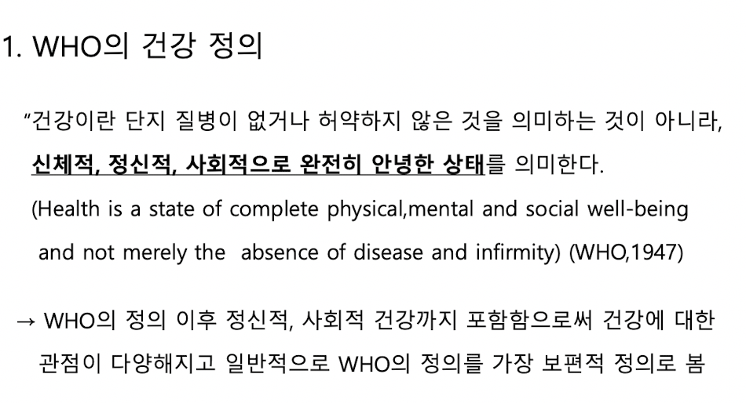

보건의료행정학과 1학기
- 보건교육학
- 지역사회보건
보건교육학
서영대학교 학습자료실 바로가기

1.보건교육은 “건강에 이로운 행동을 자발적으로 할 수 있도록 계획한 모든 학습경험들의 조합”을 의미한다고 주장한 학자는? 1번
① Green
② Dorothy Nyswander
③ William Griffiths
④ Lalonde 보고서
⑤ WHO 보고서
2. 세계보건기구가 제시한 건강증진의 정의는? 5번
① 건강에 유익한 행동을 유도하기 위한 보건교육
② 건강한 사람들이 자신들의 안녕을 유지 증진시킬 수 있는 습관을 개발하는 것
③ 건강과 관련된 조직적, 경제적, 환경적인 지원의 조합
④ 개인과 지역사회가 생활습관을 개발할 수 있도록 개발하는 활동
⑤ 개인이나 지역사회에 건강결정인자들에 대한 통제를 증가시켜 스스로의 건강을 향상시키게 하는 과정
3. Tannahill이 제시한 건강증진 모델 중 자동차 안에서의 안전벨트착용 의무화, 미성년자에게 술이나 담배 판매 금지 등)재정적 통제를 가하가나(술·담배에 대한 세금 증가, 무연 휘발유에 대한 세금 감면 등)은 어느 요인에 포함되는가? 3번
① 보건교육
② 예방
③ 건강보호
④ 건강규칙
⑤ 건강상담
4. Tannahill의 건강증진모델에서 예방적 건강보호를 위한 보건교육은? 4번
① 예방접종, 자궁경부암 선별 검사
② 생활양식의 변화 유도
③ 충치예방을 위해 수돗물에 불소를 첨가하는 것
④ 안전벨트 착용을 의무화하는 법안을 통과시키도록 하는 것
⑤ 대중이나 정책 결정자들에게 적극적 건강보호 수단의 중요성을 인식시키는 것
5. 오타와 헌장에서 천명한 국가가 국민의 건강증진을 위해 준수해야 할 세 가지 원칙을 바르게 짝지은 것은? 2번
① 옹호, 지원, 환경조성
② 옹호, 연합, 역량강화
③ 환경조성, 지원, 역량강화
④ 개인기술, 환경조성, 공공정책
⑤ 환경조성, 옹호, 연합